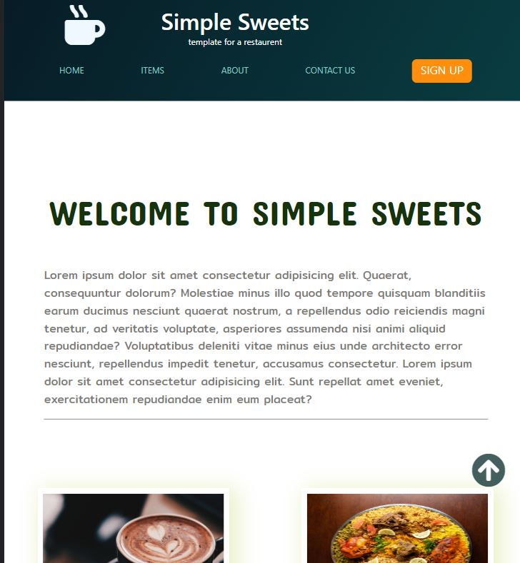
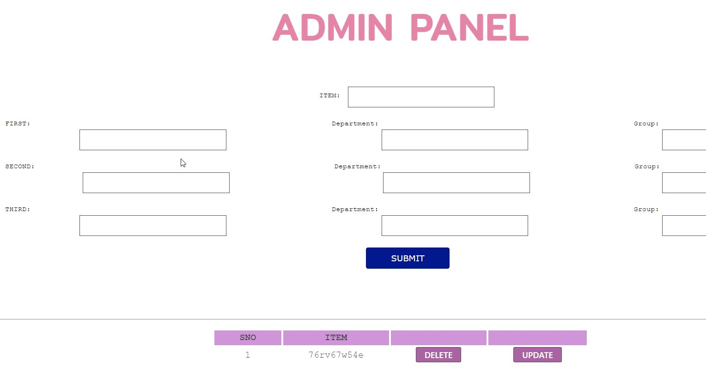
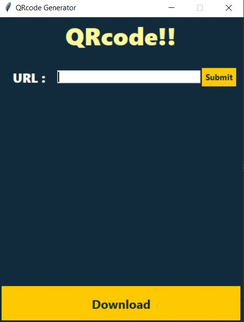
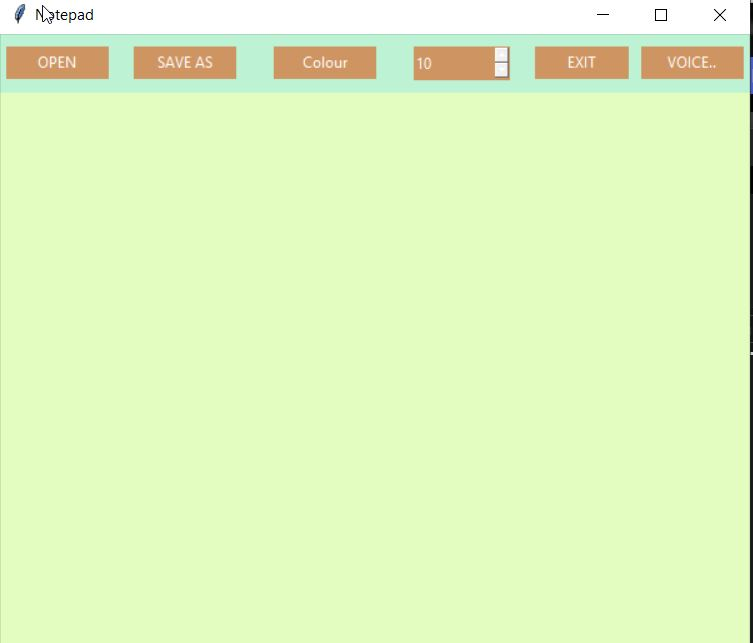

I have created a responsive static food delivery webpage using HTML and CSS that seamlessly caters to users across various devices. The webpage features a clean and appealing design, with a prominently displayed navigation menu that enables easy browsing through different food categories. The use of media queries ensures that the layout gracefully adapts to different screen sizes, enhancing user experience. Mouthwatering food images are showcased in a grid pattern, enticing visitors to explore the menu further. A strategically positioned order button and contact information section provide quick access to placing orders and getting in touch. The color scheme and typography are chosen to evoke a sense of appetite and warmth, enhancing the overall visual appeal of the webpage. Through the fusion of HTML and CSS, this food delivery webpage offers a delightful and user-friendly interface that tempts users to savor a delectable dining experience.
For my college fine arts day, I embarked on a remarkable journey by creating my inaugural backend application using Python, Flask, HTML, CSS, and JavaScript. With Flask as the backbone, I developed a robust and dynamic platform for publishing the much-anticipated results of the event. The synergy between Python's logic and Flask's seamless routing allowed me to effortlessly manage data processing and transmission. Integrating HTML and CSS, I designed an intuitive and aesthetically pleasing user interface that provided an engaging experience. Furthermore, JavaScript's interactivity breathed life into the application, enabling real-time updates and enhancing user engagement. This experience not only unveiled the power of backend development but also showcased the pivotal role it plays in modern event management, leaving an indelible mark on both the fine arts day and my journey as a burgeoning developer.
I developed a QR code generator project utilizing the power of Python's Tkinter GUI and the qrcode module. This project enables users to effortlessly create QR codes for various purposes, providing a user-friendly interface. Through Tkinter, I designed an intuitive graphical interface where users can input their desired information, whether it's a URL, text, or any data. Leveraging the qrcode module, the application then dynamically generates QR codes corresponding to the provided data. Users can customize QR code dimensions, error correction levels, and other parameters, tailoring the codes to their specific needs. This project not only highlights my proficiency in Python programming and GUI design but also showcases my ability to integrate external libraries effectively for practical applications like QR code generation.
I have developed a versatile notepad application using Python and the Tkinter library. This application provides users with a simple yet powerful platform for creating and managing text-based documents. The interface features a user-friendly layout with a menu bar that houses essential tools. The "File" menu enables users to create new documents, open existing ones, and save their work. The "Edit" menu includes tools like copy, paste, and undo/redo, enhancing text manipulation. The "Format" menu offers options to change font styles, sizes, and colors, allowing users to personalize their text. Additionally, the "Tools" menu integrates functionalities such as find and replace, aiding in efficient document editing. With its intuitive design and comprehensive toolset, this Python and Tkinter-based notepad application simplifies the writing and editing process for users of all levels.
